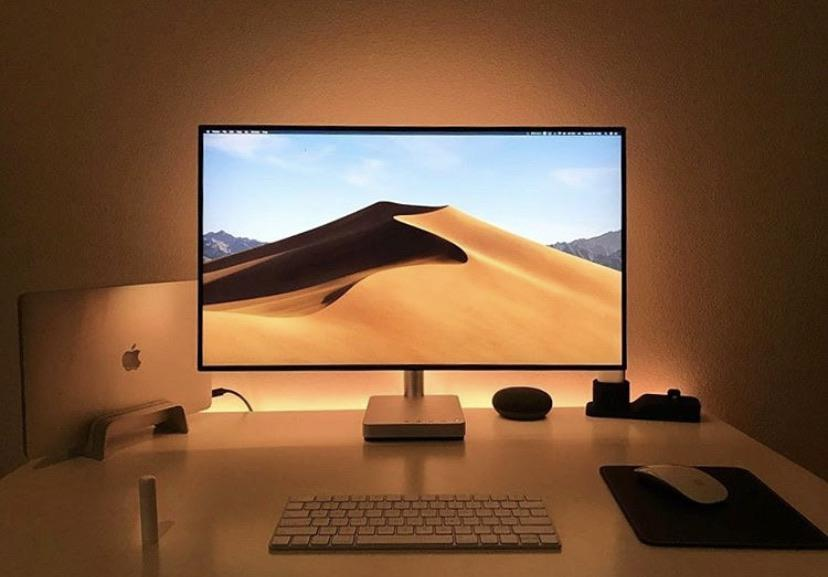

DRIVERS DE MONITOR
Aquí proporcionamos información detallada y actualizada sobre los controladores para una amplia gama de monitores.
MONITOR
Un monitor es una pieza de hardware de computadora que muestra la información de video y gráficos generada por una computadora conectada a través de la tarjeta de video de la computadora. Los monitores son similares a los televisores, pero normalmente muestran información en una resolución mucho mayor. La pantalla del monitor está compuesta por una matriz de píxeles dispuestos en filas y columnas. La resolución del monitor se refiere a la cantidad de píxeles en esta matriz (por ejemplo, 1920 x 1080 significa 1920 píxeles de ancho y 1080 píxeles de alto).
La historia del Monitor
La historia de los monitores de computadora está estrechamente relacionada con la evolución de la tecnología y su función inicial. Originalmente, los monitores de computadora se utilizaban principalmente para el procesamiento de datos, mientras que los televisores tenían la función de mostrar contenido de vídeo. Esta distinción estaba claramente marcada en las décadas anteriores. En la década de 1980, sin embargo, comenzó a producirse un cambio significativo. Las computadoras, junto con sus monitores, comenzaron a desempeñar un papel importante tanto en el procesamiento de datos como en la visualización de vídeo.
Este cambio se debió en parte a la introducción de monitores a color CRT, lo que permitió una experiencia visual más rica y versátil. Al mismo tiempo, los televisores también comenzaron a implementar algunas funciones informáticas, aunque de manera más limitada. La convergencia tecnológica entre computadoras y televisores comenzó a ser evidente. La década de 2000 marcó otro hito importante en la evolución de los monitores. La introducción de los monitores de cristal líquido (LCD) reemplazó gradualmente a los antiguos monitores CRT. Los monitores LCD eran más delgados, livianos y eficientes en términos de energía, lo que los hacía ideales tanto para computadoras portátiles como de escritorio. Esta transición coincidió con el cambio en la relación de aspecto típica de las pantallas, pasando de 4:3 a 16:9, lo que mejoró la experiencia de visualización de vídeo y películas. En la década de 2010, los monitores modernos generalmente incorporaban pantallas LCD con retroiluminación LED, lo que mejoraba aún más la calidad de la imagen y la eficiencia energética. Esta tecnología reemplazó a las pantallas LCD con retroiluminación CCFL, que eran más antiguas y menos eficientes.
Funcionamiento
- RetroiluminaciónLa mayoría de los monitores modernos utilizan una fuente de retroiluminación (generalmente LED) para iluminar la pantalla desde la parte posterior. Esta retroiluminación proporciona la luz de fondo necesaria para que los píxeles sean visibles
- Matriz de píxelesCada píxel de la pantalla es una pequeña celda que puede emitir luz de diferentes colores. Los píxeles se organizan en la matriz y se activan individualmente para mostrar colores específicos.
Tipos de monitores
- Pantallas OLED Utilizan diodos orgánicos para ofrecer negros profundos y colores vibrantes. Son delgadas y flexibles.
- Monitores LCD Emplean cristales líquidos y pueden ser retroiluminados por LED o tubos fluorescentes. La calidad de imagen varía según la tecnología utilizada
- Pantallas CTR Usan tubos de rayos catódicos, son obsoletas, pesadas y voluminosas.
- Monitores LED Usan LED para retroiluminación, generalmente son LCD LED. Varían en calidad y son más delgados y eficientes que los CRT.
DRIVER
¿Qué es un driver?
Un driver o controlador, es un programa informático o software, que hace posible la interacción entre el sistema operativo de un ordenador y un dispositivo periférico. El controlador proporciona una interfaz que permite al usuario el uso de un periférico a través del ordenador.
¿Qué es y para qué sirve un driver de monitor?
Es un componente de software importante que permite la comunicación entre las aplicaciones de software y el hardware de gráficos. Traduce comandos de software en acciones que el hardware de gráficos puede ejecutar, administra la configuración de pantalla, optimiza el rendimiento y garantiza la compatibilidad con el sistema operativo y las aplicaciones de software. Contienen información sobre las características y capacidades del monitor, como el tamaño, la resolución, la frecuencia de actualización y los colores que puede mostrar. Son esenciales para aprovechar al máximo las características de los monitores modernos, como la alta resolución, el alto rango dinámico, la frecuencia de refresco variable y el soporte para tecnologías como FreeSync y G-Sync, que sincroniza el monitor con la tarjeta gráfica para evitar el efecto de tearing o desgarro de la imagen.
¿Cómo funciona un driver de monitor?
Antes de que los datos puedan ser transmitidos a la pantalla, deben ser convertidos en bits, que son la unidad más pequeña de información en una computadora. Cada dato, como un píxel de color en una imagen, se representa mediante una secuencia de bits. Por ejemplo, en una pantalla con una profundidad de color de 24 bits por píxel, cada píxel se representa con tres conjuntos de 8 bits, uno para el rojo, uno para el verde y uno para el azul. Esta representación se basa comúnmente en el modelo RGB (Rojo, Verde, Azul), donde cada canal de color se traduce en valores binarios que describen los colores y tonos de cada píxel en la imagen. 9 Modelo RGB: En este modelo, cada píxel se representa mediante tres valores numéricos que indican la intensidad de los colores rojo, verde y azul en ese píxel. Estos valores son números enteros que van desde 0 (sin intensidad) hasta 255 (intensidad máxima). Combinando diferentes intensidades de estos tres colores en un píxel, puedes crear una amplia gama de colores. Ejemplo: Si tienes un píxel con valores RGB de (255, 0, 0), se mostrará como rojo puro, ya que el rojo está a su intensidad máxima, mientras que el verde y el azul están apagados (a intensidad cero). Los bits que representan el color y el brillo de cada píxel se manipulan para lograr la paleta de colores deseada y el nivel de brillo. Esto puede implicar el uso de tablas de búsqueda (lookup tables) o algoritmos de corrección de color para garantizar una reproducción precisa de los colores. Como conclusión estos bits, después de ser procesados y ajustados según las necesidades, son almacenados en la memoria de video y luego transferidos a la pantalla en función de las señales de control generadas por el controlador de driver. Cada píxel se activa en la pantalla con una combinación específica de bits. Por ejemplo, en una pantalla LCD, un transistor se enciende o apaga para permitir o bloquear la luz en cada píxel, lo que crea la imagen final. En conjunto, este proceso asegura que los colores y el brillo deseados se muestren de manera precisa en la pantalla.